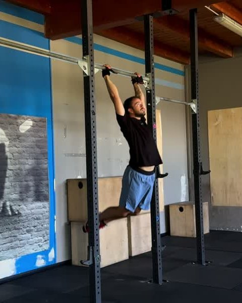
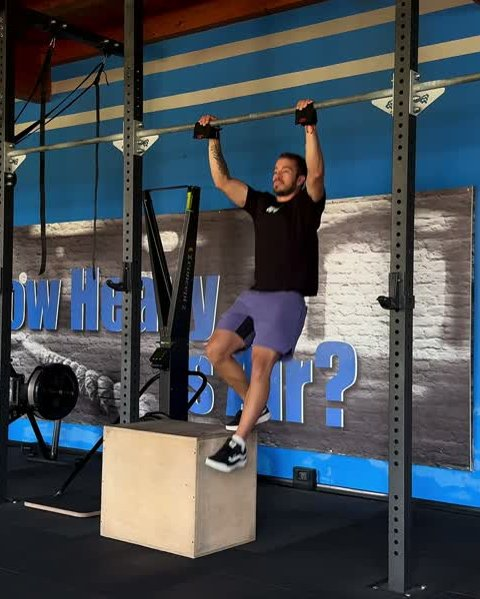

Guida gratuita
Chest to Bar:
da dove parti
Tre test per trovare il tuo gradino. Due sessioni da alternare per salirlo.
Filipe Ramos · coach di ginnastica · @coachfiliperamos
Scarica il PDFIl chest to bar chiede pochi centimetri in più del kipping pull up. Quei centimetri non arrivano dalle braccia: arrivano dal kip.
Per questo si impara con un box sotto la sbarra. Prima con tutti e due i piedi sopra, così una parte del peso resta a terra e puoi ripetere il disegno finché non ti chiede più attenzione. Poi con un piede solo, e la gamba libera spinge il kip. Quando il box sparisce, il movimento è già imparato. Questa è la scala del programma First Kipping Chest to Bar dell'app FAR Training.
1. Il test: trova il tuo gradino
Fai i test in ordine, riposando quanto ti serve tra uno e l'altro. Ti fermi al primo che non passi: quello è il tuo gradino.
-

0Strict + Kipping Pull Up
3 strict e 5 kipping di fila. È il punto di partenza. Se non ci arrivi, parti dalla guida dello Strict Pull Up.
-

1One Leg Box Kipping Chest to Bar
5 serie da 1 per lato, 1' di recupero. Un piede sul box: il kip e la tirata vanno insieme, il petto tocca la sbarra.
-
2
Kipping Chest to Bar
1 ripetizione. Senza box, il petto tocca la sbarra.
Passi anche il 2? Il chest to bar ce l'hai. Adesso si tratta di legarli.
2. Cosa allenare sul tuo gradino
Due sessioni da alternare, A e B, quattro giorni di fila: A, B, A, B. Sono le dosi con cui si parte nell'app. Il PVC Drill si fa in piedi, con un tubo in mano, e insegna ai gomiti la linea che percorrono. I Kipping Pull Up sono singoli e ognuno va fatto più esplosivo che puoi. Gli Strict Pull Up sono a percentuale del tuo massimo di ripetizioni. Quando il lavoro diventa facile, rifai il test del tuo gradino.
Gradino 1 · Sessione A Non passi il One Leg Box
| Esercizio | Dose | Recupero |
|---|---|---|
| PVC Chest to Bar Drill | 3 × 10 | 30" |
| Two Leg Box Kipping Chest to Bar | 3 × 5 | 1' |
| Kipping Pull Up | 5 × 1 | 30" |
Gradino 1 · Sessione B Non passi il One Leg Box
| Esercizio | Dose | Recupero |
|---|---|---|
| Two Leg Box Kipping Chest to Bar | 3 × 5 | 1' |
| Kipping Pull Up | 6 × 1 | 30" |
| Strict Pull Up | 3 × 40% max | 1' |
Gradino 2 · Sessione A Non passi il Kipping Chest to Bar
| Esercizio | Dose | Recupero |
|---|---|---|
| PVC Chest to Bar Drill | 3 × 10 | 30" |
| One Leg Box Kipping Chest to Bar | 3 × 3/3 | 1' |
| Kipping Pull Up | 5 × 2 | 30" |
Gradino 2 · Sessione B Non passi il Kipping Chest to Bar
| Esercizio | Dose | Recupero |
|---|---|---|
| One Leg Box Kipping Chest to Bar | 3 × 4/4 | 1' |
| Kipping Pull Up | 6 × 2 | 30" |
| Strict Pull Up | 3 × 50% max | 1' |
3/3 vuol dire 3 ripetizioni per lato: cambi il piede sul box.
Il programma completo
Nell'app FAR Training ogni gradino è una fase intera: quattro sessioni, la progressione delle dosi giorno per giorno, il video di ogni esercizio e il test di fase alla fine. Il programma First Kipping Chest to Bar arriva sull'app: segui @fartraining per sapere quando esce.
Non sai se hai passato un test? Mandami il video in DM su @coachfiliperamos e ti dico da che gradino partire.
Apri @coachfiliperamos